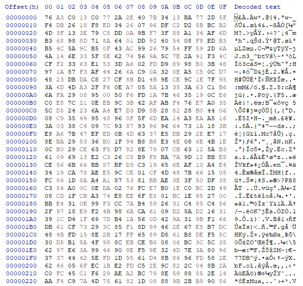
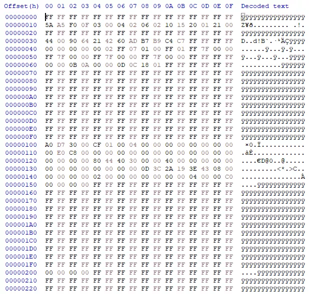
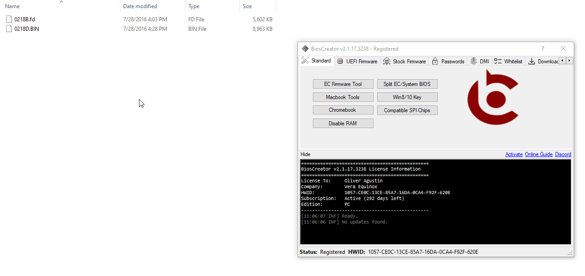

<style>
    .center {
        display: block;
        margin-left: auto;
        margin-right: auto;
        width: 50%;
      }

    a {
      text-decoration: none;
      display: inline-block;
      padding: 8px 16px;
    }
    
    a:hover {
      background-color: #ddd;
      color: black;
    }
    
    .previous {
      background-color: #f1f1f1;
      color: black;
    }
    
    .next {
      background-color: #160042;
      color: white;
    }
    </style>

<section class="support section bg-gray">
	<div class="container">
    <div class="container" style="text-align:justify; margin-bottom:50px;">
      <h4 class="join">How to decrypt encrypted HP Bios firmware?</h4>
      <p>Decrypting an HP bin or FD file is fairly easy with the use of BiosExtractor. 
        Even if you were able to extract the firmware from HP Bios Update EXE, most of the times the file is 
        encrypted. One way to identify if it the content is encrypted or not is the presence of random data. 
        HEX editor can be used to examine and confirm the content of the file.</p>
        <p>The file is encrypted if you are unable to find any contiguous FF or 00 values as shown below:</p>

      <h2>Encrypted: Values are random</h2>
      
      <br>

      <h2>Decrypted: FF or 00 contiguous values are present</h2>
      
      <br>

      <h2>Procedure for decrypting HP BIN/FD File</h2>
      <p><b>Steps:</b></p>
      <li>Drag the FD file</li>
      <li>Click the Decrypt button.</li>
      <br>

      <p><b>Example:</b></p>
      
      <br>
      

    <a href="{{ site.baseurl }}/faq/hardware-id" class="previous">&laquo; Previous</a>
    <a href="{{ site.baseurl }}/faq/split-bin" class="next">Next &raquo;</a>

		</div> <!-- End row -->
	</div> <!-- End container -->
</section> <!-- End section -->